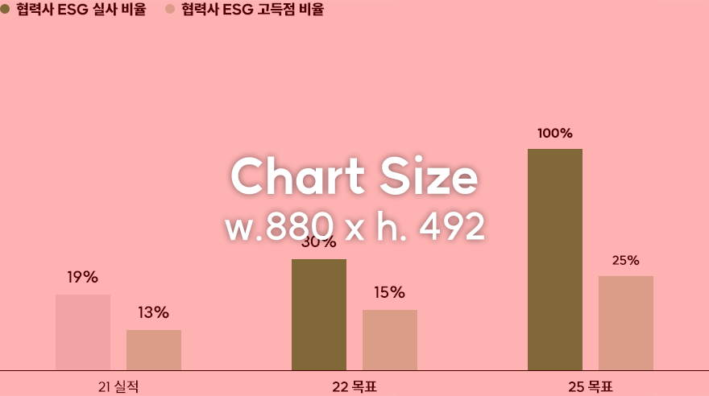
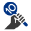

11. 협력사 ESG 리스크 관리 강화
핵심 협력사 ESG 실사 100%,
핵심 협력사 ESG 심화평가 고득점 비율 25% 이상
핵심 협력사 ESG 심화평가 고득점 비율 25% 이상
SK이노베이션은 '지속 가능한 공급망 및 안정적 조달'을 '협력사 ESG 관리' 핵심과제의 궁극적인 목표로 설정하였습니다. 이러한 목표 달성을 위해 ESG 고위험 협력사를 정의하고 적극적인 관리와 컨설팅 등의 지원을 통해 ESG 우수 협력사들을 지속적으로 육성하고자 합니다
핵심 협력사 ESG 실사/고득점 비율

* (참고) 고득점 협력사 기준 : ESG 정기 평가 기준 Leader 그룹 해당(ESG 평가 1,2 등급)
달성 전략

협력사 정기평가 기반 ESG 맞춤 컨설팅 프로그램 운영 통한 공급망 Process 고도화
- ESG 평가 등급별 방문/온라인 등의 다양한 방식을 고려한 맞춤형 교육 진행
- ESG 수준 개선을 위한 중·장기 전략 수립 및 이행 관리에 대한 컨설팅 진행